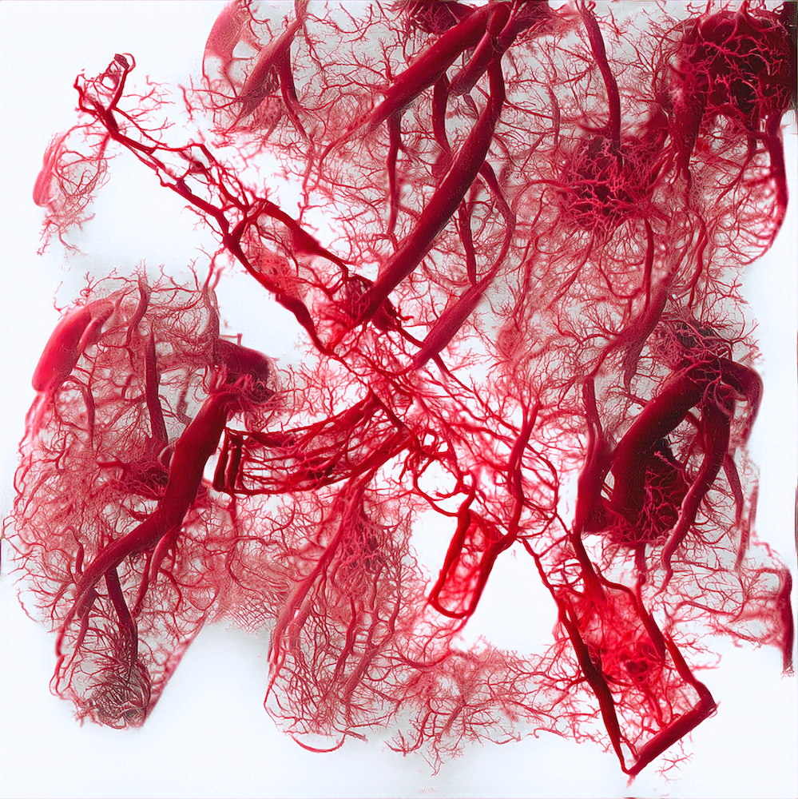
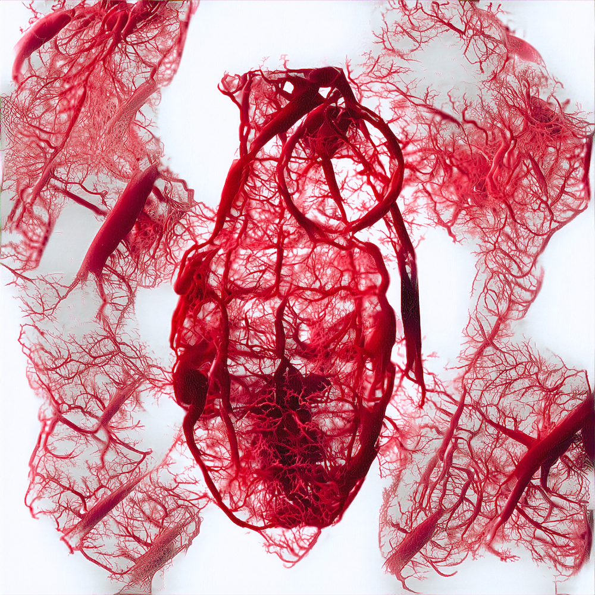
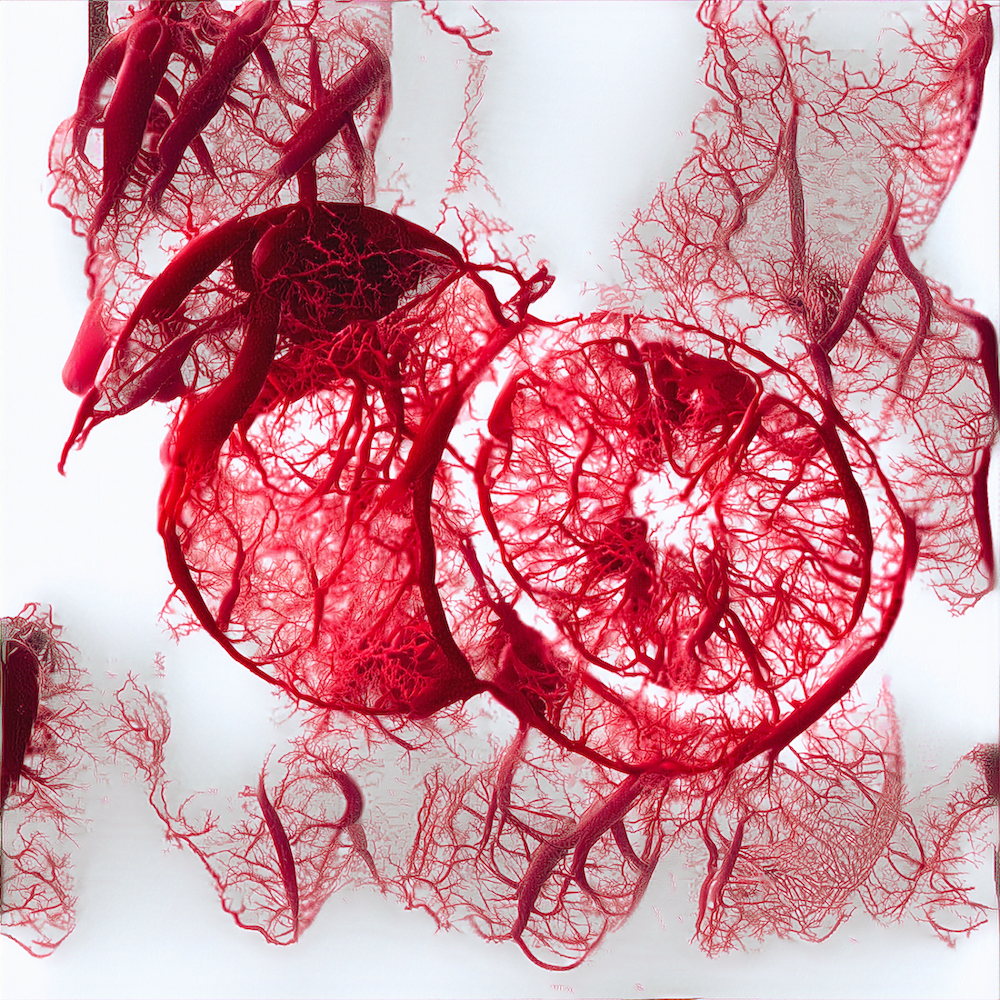
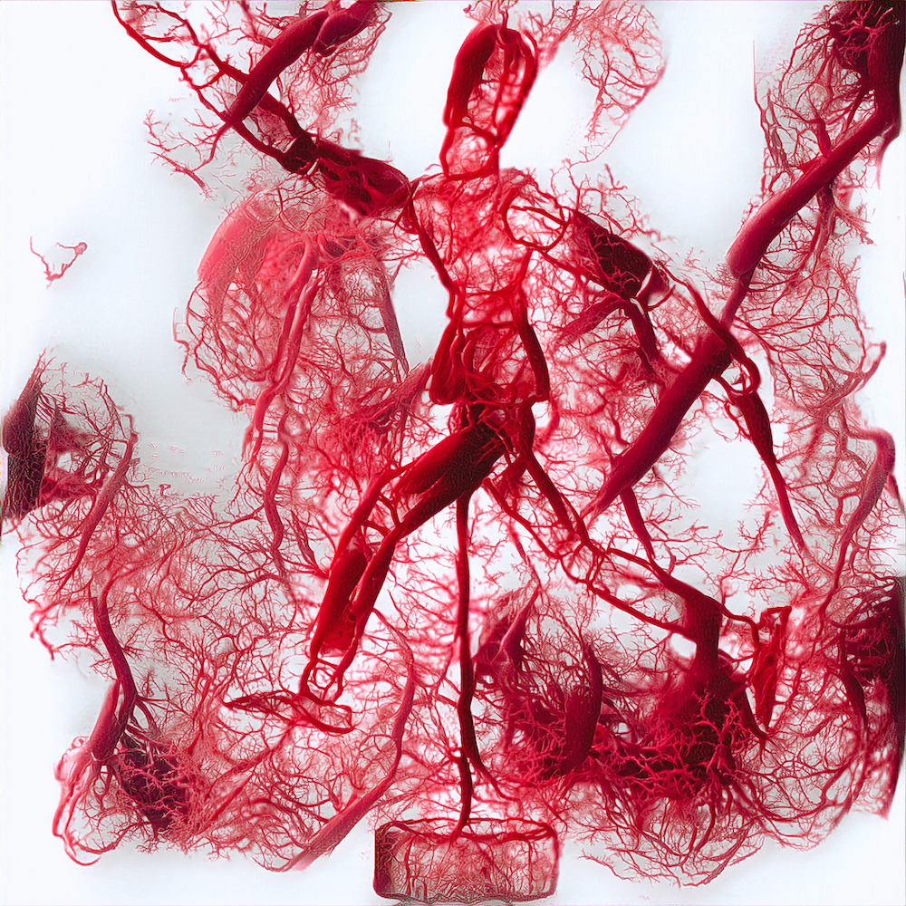

NFT Collection 0, 1615481914
Still and Life 2
Content Loss: 0
Hardware: NVIDIA Tesla P100
Epoch: 1615531694

Still and Life 3
Content Loss: 0
Hardware: NVIDIA Tesla P100
Epoch: 1615540505

Still and Life 4
Content Loss: 0
Hardware: NVIDIA Tesla P100
Epoch: 1615688974

Still and Life 5
Content Loss: 0
Hardware: NVIDIA Tesla P100
Epoch: 1615692811

Drag to view